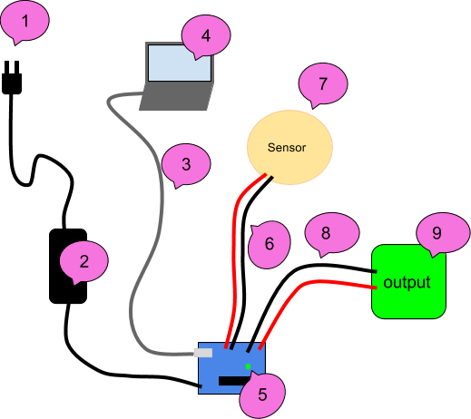

Robotic Arts Intro Fall 2018 (IA277.01)
- Instructor: Lucas Haroldsen (lharoldsen@mica.edu)
- Class Site: yasunaga.work/raif18
- syllabus: syllabus.pdf
- Resources: links.html
11/16: [work and planning day]
Project 2 : Idea drawing and precedents
Today, I will be meeting with each of you individually throughout the class time to talk about your final project.
We will discuss:
- ideas and drawings of your project
- Precedents and inspirations
- a general schedule of progression
- materials and supplies for your project
- potential difficulties of your project
Troubleshooting Checklist
When we work with electronics, do not expect everything to work on a first try! There are times that things work on a first try but always expect a problem.
Troubleshooting is an important and an essential skill for working with electronics.
Here are some guidelines for troubleshooting projects. Ask few questions to yourself to start this process.
- Is this problem occurring for the first time? If so is there any difference?
- What was the last thing you change in your project?
- Are there a part that's working? If so what is working and what is not?
- Based on these questions, what do you think might be happening?
Now, when you get to troubleshooting with details of your project, I want you to pay attention to a couple of things.
- If anything is too hot to touch, smells burned, or if you see smoke, unplug everything and identify where in your project is it coming from.
- Test your components from one end or another so you can eliminate working part of circuit as you go
- Take a break! We make some mistake often when we are working on the same thing for too long. Fresh eye always helps to see a problem

Above is an example set up for a testing sequence.
We will start at the plug and work our way up to the sensors and outputs.
Use a multimeter to test the circuit! Here is a refresher on how to use a multimeter
1: Wall
- Test if the outlet you are using is working by plugging other electronics in like lamps
- Try another outlet
- If you are using power strips or surge protectors, make sure they are turned on
- Test any extension cords you are using
- Some outlet has "reset" button
2: Power Supply / Battery
- Make sure your power supply is plugged in firmly to wall and arduino
- Check the label and make sure it is meant to provide in between 9V and 12V if you are plugging into 2.1 mm center positive plug
- Use multimeter to check the output voltage
- Use another power supply
- Make sure battery is not dead
3: USB cord
- It is more common then we expect that bad USB cable causes issues.
- Swap out the USB cable to make sure cable is good. If not throw it away!
4: Computer / Code
- Make sure you have selected right board to upload in arduino software (Tools --> Board)
- Make sure you have selected the port you are connecting (Tools --> Serial Port)
- Try to load simple sketch like Blink.ino sketch from example and see if it uploads
- Restart arduino software
- Restart computer
- Come back to coding troubleshooting after you confirm that arduino is working with simple code
5: Arduino
- Make sure On LED is lighting up
- Make sure no conductive objects are touching on the bottom of the board
- Press "Reset" button
- Try to load simple sketch like Blink.ino sketch from example and make sure TX and RX LEDs are lighting up during upload
- Double check all connection and there is no short circuit
- Remove all connection except for USB and try to upload Blink sketch
- Try another arduino
6: Wires to the sensors
- Bad solder can cause connection issues. Make sure your soldering connections are attached well
- Check continuity from one end to soldered connection to the sensor using multimeter
- Discard any wire that fails continuity test
7: Sensors / Components
- Check if it's soldered well
- If you are using Digital input, upload the simplest sketch like Examples > Digital > Button
- If you are using Analog input, upload the simplest sketch like Examples > Analog > AnalogInput
- Use serial monotor and serial plotter
- Swap out for identical sensor
8: wire to the output
- Again, bad solder can cause connection issues. Make sure your soldering connections are attached well
- Check continuity
9: output
- Check if it's wired correctly
- Power it without arduino if you can
- swap it with another one
10: coding
- always start small. When you have multiples input and output, start with one input one outputs
- Make sure you have main structure down --- void setup() void loop()
- make sure there is no duplicate variables
- make multiple sketches in stages of your project
- comment your code!
- Use serial monitor
Arduino Review
Remember these?
- Basic Component
- Digital Input and Output
- variables
- if else --video
- Analog Input, Serial Print, Threshold --video
- Analog output and tone()
- Conditioning
- For loop video
- using millis instead of delay (multitasking) Adafruit tutorial
Range / Distance / Proximity sensors
Library for HC-SR04 written by Sam Sheffield
How to install a library
Stractural complexity
- How to merge or combine code
- Copy one sketch to another sketch or create new sketch
- Resolve any duplicating functions or global variables
- (Functions: void loop(), void setup()
- Variables: int, float)
- Resolve any duplicating pin use
- Delete any duplicate part that is doing the same thing
- Comment your code!
- Write out what you want your code to do
- State Change Detection
- SwitchCase
- Random_behavior
Interfacing with AC circuits
Where to get stuff!
Remember to ckeck out links at the resource page!
3D printing and modeling
3D printers
We have three 3D printers in house! Let me know if you have a file you want to print during the class. I can print them and go over how to use the printers.
3D modeling software
- OpenSCAD: Free code based 3D modeling software. Great if you are good at coding
Basic Tutorials - Rhinoceros 3D: Popular paid 3D modeling software that cost ~$200 for students. Installed on computers on the 4th floor computer LAB.
Tutorials at Lynda.com through your MICA portal - TINKERCAD :Free basic online 3D modeling software
- Netfabb: Free software for cleaning your 3D models
Tutorial on how to fix and repair 3D models using Netfabb or Meshlab
Contents
interfacing
Kelly Dobson's Blendie
Random User by Monobo
Exhibitions
HOMEWORK
Work on Project 2!
Next week is a Thanksgiving break so we won't have a class. On November 30th, come to class with studies and prototypes of your project.
It should be a simplified experiment that can get a sense of your project. Prototype is a part of your final grade.
Remember, here is our schedule:
- 11/30 working prototypes and studies due
- 12/14 Project due / presentation
- 12/19 Documentation due
Watch Documentary:
All Watched Over by Machines of Loving Grace
Part 2. The Use and Abuse of Vegetational Concepts
Be prepared to share your views and relationships to the ideas that are adressed in the film.